Tutorial: Loading CMIP historical data#
Author: Ben Farris
In this notebook, we focus on loading in the data from the CMIP6 site for British Columbia and saving it to netcdf. We can then work on histogramming the data in order to understand the variability within the models. The models are the Canadian CanESM, the British Hadley model and the US GISS model
Based on project pythia
This notebook and the netcdf files are in the tutorials folder on our google drive.
Installation#
To generate the Taylor diagram in the last cell you’ll need to do install the skillmetrics module into the e440 environment:
pip install skillmetrics
Data download#
In order to avoid repeatedly downloading the data, each model download is wrapped in an if statement, so that if
writefile is set to True, the download will be written to a folder called
~/repos/e440/tutorials/tutorial_data
These same files are in the tutorials/tutorial_data folder on our google drive if you want to skip all downloads and just
copy them into the tutorial_data folder
# Import statements
import xarray as xr
xr.set_options(display_style='html')
import intake
import pandas as pd
import matplotlib.pyplot as plt
from pathlib import Path
import cartopy.crs as ccrs
import xesmf
import cartopy
Pull the data from the site itself and put into pandas df in order to be able to visualize it. Following similar steps to project pythia
cat_url = "https://storage.googleapis.com/cmip6/pangeo-cmip6.json"
col = intake.open_esm_datastore(cat_url)
col.df
| activity_id | institution_id | source_id | experiment_id | member_id | table_id | variable_id | grid_label | zstore | dcpp_init_year | version | |
|---|---|---|---|---|---|---|---|---|---|---|---|
| 0 | HighResMIP | CMCC | CMCC-CM2-HR4 | highresSST-present | r1i1p1f1 | Amon | ps | gn | gs://cmip6/CMIP6/HighResMIP/CMCC/CMCC-CM2-HR4/... | <NA> | 20170706 |
| 1 | HighResMIP | CMCC | CMCC-CM2-HR4 | highresSST-present | r1i1p1f1 | Amon | rsds | gn | gs://cmip6/CMIP6/HighResMIP/CMCC/CMCC-CM2-HR4/... | <NA> | 20170706 |
| 2 | HighResMIP | CMCC | CMCC-CM2-HR4 | highresSST-present | r1i1p1f1 | Amon | rlus | gn | gs://cmip6/CMIP6/HighResMIP/CMCC/CMCC-CM2-HR4/... | <NA> | 20170706 |
| 3 | HighResMIP | CMCC | CMCC-CM2-HR4 | highresSST-present | r1i1p1f1 | Amon | rlds | gn | gs://cmip6/CMIP6/HighResMIP/CMCC/CMCC-CM2-HR4/... | <NA> | 20170706 |
| 4 | HighResMIP | CMCC | CMCC-CM2-HR4 | highresSST-present | r1i1p1f1 | Amon | psl | gn | gs://cmip6/CMIP6/HighResMIP/CMCC/CMCC-CM2-HR4/... | <NA> | 20170706 |
| ... | ... | ... | ... | ... | ... | ... | ... | ... | ... | ... | ... |
| 514813 | CMIP | EC-Earth-Consortium | EC-Earth3-Veg | historical | r1i1p1f1 | Amon | tas | gr | gs://cmip6/CMIP6/CMIP/EC-Earth-Consortium/EC-E... | <NA> | 20211207 |
| 514814 | CMIP | EC-Earth-Consortium | EC-Earth3-Veg | historical | r1i1p1f1 | Amon | tauu | gr | gs://cmip6/CMIP6/CMIP/EC-Earth-Consortium/EC-E... | <NA> | 20211207 |
| 514815 | CMIP | EC-Earth-Consortium | EC-Earth3-Veg | historical | r1i1p1f1 | Amon | hur | gr | gs://cmip6/CMIP6/CMIP/EC-Earth-Consortium/EC-E... | <NA> | 20211207 |
| 514816 | CMIP | EC-Earth-Consortium | EC-Earth3-Veg | historical | r1i1p1f1 | Amon | hus | gr | gs://cmip6/CMIP6/CMIP/EC-Earth-Consortium/EC-E... | <NA> | 20211207 |
| 514817 | CMIP | EC-Earth-Consortium | EC-Earth3-Veg | historical | r1i1p1f1 | Amon | tauv | gr | gs://cmip6/CMIP6/CMIP/EC-Earth-Consortium/EC-E... | <NA> | 20211207 |
514818 rows × 11 columns
Look at the unique keys for all the entries in order to find the models we want
cmipdf = col.df
cmipdf['source_id'].unique()
<ArrowExtensionArray>
[ 'CMCC-CM2-HR4', 'EC-Earth3P-HR', 'HadGEM3-GC31-MM',
'HadGEM3-GC31-HM', 'HadGEM3-GC31-LM', 'EC-Earth3P',
'ECMWF-IFS-HR', 'ECMWF-IFS-LR', 'HadGEM3-GC31-LL',
'CMCC-CM2-VHR4', 'GFDL-CM4', 'GFDL-AM4',
'IPSL-CM6A-LR', 'E3SM-1-0', 'CNRM-CM6-1',
'GFDL-ESM4', 'GFDL-ESM2M', 'GFDL-CM4C192',
'GFDL-OM4p5B', 'GISS-E2-1-G', 'GISS-E2-1-H',
'CNRM-ESM2-1', 'BCC-CSM2-MR', 'BCC-ESM1',
'MIROC6', 'AWI-CM-1-1-MR', 'EC-Earth3-LR',
'IPSL-CM6A-ATM-HR', 'CESM2', 'CESM2-WACCM',
'CNRM-CM6-1-HR', 'MRI-ESM2-0', 'SAM0-UNICON',
'GISS-E2-1-G-CC', 'UKESM1-0-LL', 'EC-Earth3',
'EC-Earth3-Veg', 'FGOALS-f3-L', 'CanESM5',
'CanESM5-CanOE', 'INM-CM4-8', 'INM-CM5-0',
'NESM3', 'MPI-ESM-1-2-HAM', 'CAMS-CSM1-0',
'MPI-ESM1-2-LR', 'MPI-ESM1-2-HR', 'MRI-AGCM3-2-H',
'MRI-AGCM3-2-S', 'MCM-UA-1-0', 'INM-CM5-H',
'KACE-1-0-G', 'NorESM2-LM', 'FGOALS-f3-H',
'FGOALS-g3', 'MIROC-ES2L', 'FIO-ESM-2-0',
'NorCPM1', 'NorESM1-F', 'MPI-ESM1-2-XR',
'CESM1-1-CAM5-CMIP5', 'E3SM-1-1', 'KIOST-ESM',
'ACCESS-CM2', 'NorESM2-MM', 'ACCESS-ESM1-5',
'IITM-ESM', 'GISS-E2-2-G', 'CESM2-FV2',
'GISS-E2-2-H', 'CESM2-WACCM-FV2', 'CIESM',
'E3SM-1-1-ECA', 'TaiESM1', 'AWI-ESM-1-1-LR',
'EC-Earth3-Veg-LR', 'CMCC-ESM2', 'CMCC-CM2-SR5',
'EC-Earth3-AerChem', 'IPSL-CM6A-LR-INCA', 'IPSL-CM5A2-INCA',
'BCC-CSM2-HR', 'EC-Earth3P-VHR', 'CESM1-WACCM-SC',
'CAS-ESM2-0', 'EC-Earth3-CC', 'MIROC-ES2H',
'ICON-ESM-LR']
Length: 88, dtype: large_string[pyarrow]
Model downloads#
From above, we know that we need 3 specific models/source_ids: CanESM5, HadGEM3-GC31-MM, GISS-E2-1-H. In addition to this, we know that we want monthly precipitation data, so we need variable_id = “pr” and table_id = “Amon”. Lastly, we’ll also need the historical data at this point.
CanESM5#
We want an approximate box of 115 to 135 lon and 49 to 60 lat, and we want a slice from 1960 to 2010. So, get closest lon lat slice and get the correct time from the site. Then write to file as a netcdf. If write = True this cell can take several minutes.
home_dir = Path.home()
out_folder = home_dir / "repos/e440/tutorials/tutorial_data"
def do_write(dataset,filename,out_folder):
"""
write a cmip6 data set to the folder ~/repos/e440/tutorials/tutorial_data
creating the folder if it doesn't already exist. If the file exits,
delete it before writing.
"""
full_path = out_folder / filename
if full_path.exists():
full_path.unlink()
out_folder.mkdir(parents=True,exist_ok=True)
dataset.load().to_netcdf(full_path,'w')
return full_path
filename = "can_bc_dset.nc"
full_path = out_folder / filename
var_key = "CMIP.CCCma.CanESM5.historical.Amon.gn"
#
# if wrie_file is true this will download and write the file to tutorial_data
#
write_file = False
if write_file:
can_subset = col.search(table_id="Amon", variable_id = "pr", source_id = "CanESM5", experiment_id = 'historical')
dset_dict = can_subset.to_dataset_dict(zarr_kwargs={'consolidated':True})
can_dset = dset_dict[var_key]
can_bc_dset = can_dset.sel(lon = slice(225.,239.0625), lat = slice(48.835241, 59.99702), time = slice('1960', '2010'))
full_path = do_write(can_bc_dset,filename,out_folder)
print(f"got here, writing {full_path=}")
#
# read the netcdffile
#
can_bc_dset = xr.open_dataset(full_path)
can_bc_dset.cf
Coordinates:
CF Axes: * X: ['lon']
* Y: ['lat']
* T: ['time']
Z: n/a
CF Coordinates: * longitude: ['lon']
* latitude: ['lat']
* time: ['time']
vertical: n/a
Cell Measures: area, volume: n/a
Standard Names: * latitude: ['lat']
* longitude: ['lon']
* time: ['time']
Bounds: T: ['time_bnds']
X: ['lon_bnds']
Y: ['lat_bnds']
lat: ['lat_bnds']
latitude: ['lat_bnds']
lon: ['lon_bnds']
longitude: ['lon_bnds']
time: ['time_bnds']
Grid Mappings: n/a
Data Variables:
Cell Measures: area, volume: n/a
Standard Names: precipitation_flux: ['pr']
Bounds: n/a
Grid Mappings: n/a
Read in the data from the netcdf file and begin plotting the data
mean_precip = can_bc_dset.groupby('time.year').mean('time').mean(['lon', 'lat'])*86400*365
plt.figure()
mean_precip.mean('member_id').pr.plot()
plt.title("Averaged Yearly precipitation for the CanESM5 GCM")
plt.xlabel('Year')
plt.ylabel('Precipitation total (mm)')
Text(0, 0.5, 'Precipitation total (mm)')
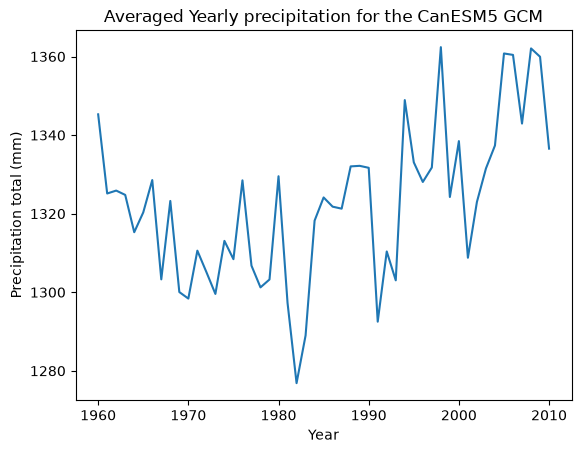
Looking at what the monthly precipitation pattern looks like for 1960-2010
mean_precip_monthly = can_bc_dset.groupby('time.month').mean('time').mean(['lon', 'lat'])*86400*30.4
plt.figure()
mean_precip_monthly.mean('member_id').pr.plot()
plt.title("Averaged Monthly precipitation for the CanESM5 GCM")
plt.xlabel('Month')
plt.ylabel('Precipitation total (mm)')
Text(0, 0.5, 'Precipitation total (mm)')
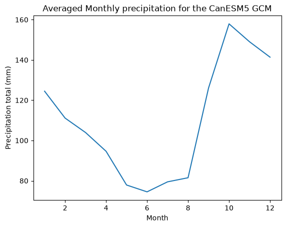
Plotting standard deviation as a timeseries
var_precip = can_bc_dset.groupby('time.year').mean('time').mean(['lon', 'lat'])*86400*365
var_precip.std('member_id').pr.plot()
plt.title("Standard deviation of precipitation for the CanESM5 members")
plt.xlabel('Year')
plt.ylabel('Precipitation total (mm)')
Text(0, 0.5, 'Precipitation total (mm)')
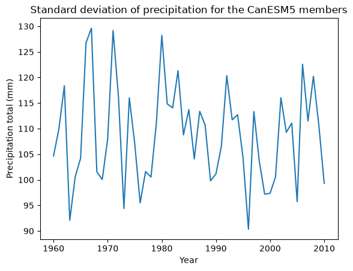
Getting an idea of the model member distribution via a histogram
hist_data = can_bc_dset.groupby('time.year').mean('time').mean(['lon', 'lat'])*86400*365
hist_data = hist_data.sel(year=2010)
hist_data.pr.plot.hist()
plt.title("2010 Precipitation Average distribution across the CanESM5 members")
plt.xlabel('Precipitation total (mm)')
plt.ylabel('Number')
Text(0, 0.5, 'Number')
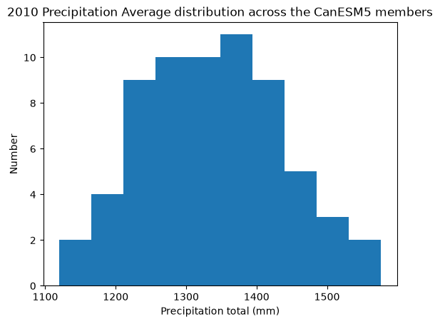
Try plotting on a map to see what data looks like
## Try plotting on a map for 2010
data2010 = can_bc_dset.sel(time='2010')
precip_data2010 = data2010.groupby('time.year').mean('time')*86400*365
precip_data2010 = precip_data2010.mean('member_id')
fig = plt.figure(1, figsize=[30,13])
ax = plt.subplot(1, 1, 1, projection=ccrs.PlateCarree())
ax.coastlines()
ax.add_feature(cartopy.feature.BORDERS, linestyle='-', alpha=1)
ax.set_extent([-140, -110, 44, 60])
resol = '50m'
provinc_bodr = cartopy.feature.NaturalEarthFeature(category='cultural',
name='admin_1_states_provinces_lines', scale=resol, facecolor='none', edgecolor='k')
ax.add_feature(provinc_bodr, linestyle='--', linewidth=0.6, edgecolor="k", zorder=10)
precip_data2010.pr.plot(ax=ax,cmap='coolwarm')
ax.title.set_text("Precipitation total for 2010")
/Users/phil/repos/climlab_dirs/climate_students_eoas/.pixi/envs/default/lib/python3.14/site-packages/shapely/creation.py:746: RuntimeWarning: invalid value encountered in create_collection
return lib.create_collection(geometries, np.intc(typ), out=out, **kwargs)
/Users/phil/repos/climlab_dirs/climate_students_eoas/.pixi/envs/default/lib/python3.14/site-packages/shapely/creation.py:746: RuntimeWarning: invalid value encountered in create_collection
return lib.create_collection(geometries, np.intc(typ), out=out, **kwargs)
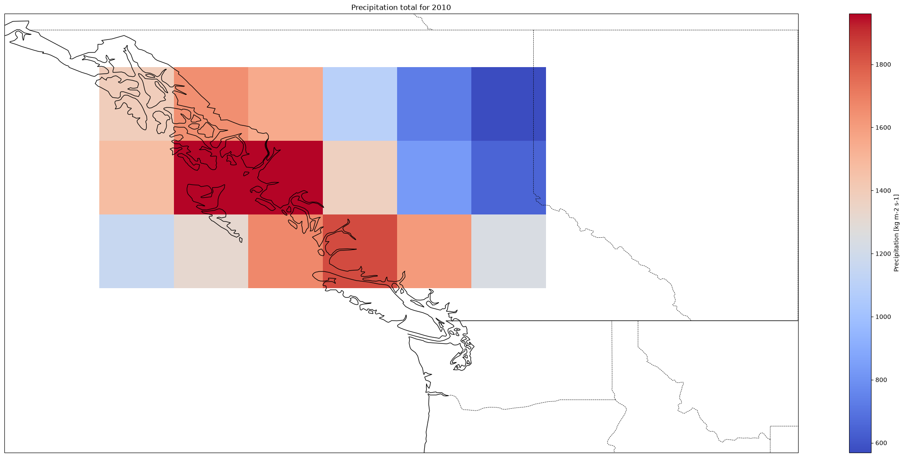
HadGEM3#
Repeat the same steps as for the CanESM
var_key = 'CMIP.MOHC.HadGEM3-GC31-MM.historical.Amon.gn'
filename = "had_bc_dset.nc"
full_path = out_folder / filename
write_file = False
if write_file:
had_subset = col.search(table_id="Amon", variable_id = "pr", source_id = "HadGEM3-GC31-MM", experiment_id = 'historical')
dset_dict = had_subset.to_dataset_dict(zarr_kwargs={'consolidated':True})
had_dset = dset_dict[var_key]
had_bc_dset = had_dset.sel(lon = slice(225.4, 239.6), lat = slice(48.835241, 59.99702), time = slice('1960', '2010'))
had_bc_dset.load().to_netcdf('had_bc_dset.nc')
full_path = do_write(had_bc_dset,filename,out_folder)
print(f"got here for hadley, writing {full_path=}")
#
# read the netcdffile
#
had_bc_dset = xr.open_dataset(full_path)
mean_precip_had = had_bc_dset.groupby('time.year').mean('time').mean(['lon', 'lat'])*86400*365
plt.figure()
mean_precip_had.mean('member_id').pr.plot()
plt.title("Averaged Yearly precipitation for the HadGEM3 GCM")
plt.xlabel('Year')
plt.ylabel('Precipitation total (mm)')
Text(0, 0.5, 'Precipitation total (mm)')
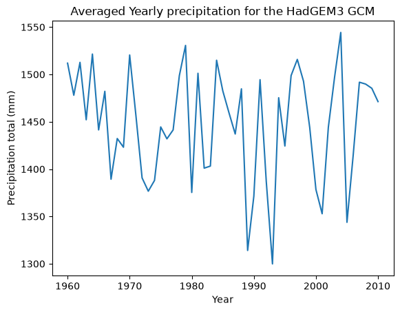
had_std_precip = had_bc_dset.groupby('time.year').mean('time').mean(['lon', 'lat'])*86400*365
had_std_precip.std('member_id').pr.plot()
plt.title("Standard deviation of precipitation for the HadGEM members")
plt.xlabel('Year')
plt.ylabel('Precipitation total (mm)')
Text(0, 0.5, 'Precipitation total (mm)')
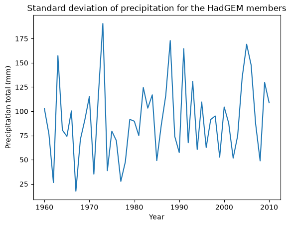
had_hist_data = had_bc_dset.groupby('time.year').mean('time').mean(['lon', 'lat'])*86400*365
had_hist_data = had_hist_data.sel(year=2010)
had_hist_data.pr.plot.hist()
plt.title("2010 Precipitation Average distribution across the HadGEM members")
plt.xlabel('Precipitation total (mm)')
plt.ylabel('Number')
Text(0, 0.5, 'Number')
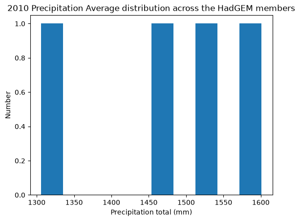
had_data2010 = had_bc_dset.sel(time='2005')
had_precip_data2010 = had_data2010.groupby('time.year').mean('time')*86400*365
had_precip_data2010 = had_precip_data2010.mean('member_id')
fig = plt.figure(1, figsize=[30,13])
ax2 = plt.subplot(1, 1, 1, projection=ccrs.PlateCarree())
ax2.coastlines()
ax2.add_feature(cartopy.feature.BORDERS, linestyle='-', alpha=1)
ax2.set_extent([-140, -110, 40, 60])
resol = '50m'
provinc_bodr = cartopy.feature.NaturalEarthFeature(category='cultural',
name='admin_1_states_provinces_lines', scale=resol, facecolor='none', edgecolor='k')
ax2.add_feature(provinc_bodr, linestyle='--', linewidth=0.6, edgecolor="k", zorder=10)
had_precip_data2010.pr.plot(ax=ax2,cmap='coolwarm')
ax.title.set_text("Precipitation total for 2010")
/Users/phil/repos/climlab_dirs/climate_students_eoas/.pixi/envs/default/lib/python3.14/site-packages/shapely/creation.py:746: RuntimeWarning: invalid value encountered in create_collection
return lib.create_collection(geometries, np.intc(typ), out=out, **kwargs)
/Users/phil/repos/climlab_dirs/climate_students_eoas/.pixi/envs/default/lib/python3.14/site-packages/shapely/creation.py:746: RuntimeWarning: invalid value encountered in create_collection
return lib.create_collection(geometries, np.intc(typ), out=out, **kwargs)
/Users/phil/repos/climlab_dirs/climate_students_eoas/.pixi/envs/default/lib/python3.14/site-packages/shapely/creation.py:746: RuntimeWarning: invalid value encountered in create_collection
return lib.create_collection(geometries, np.intc(typ), out=out, **kwargs)
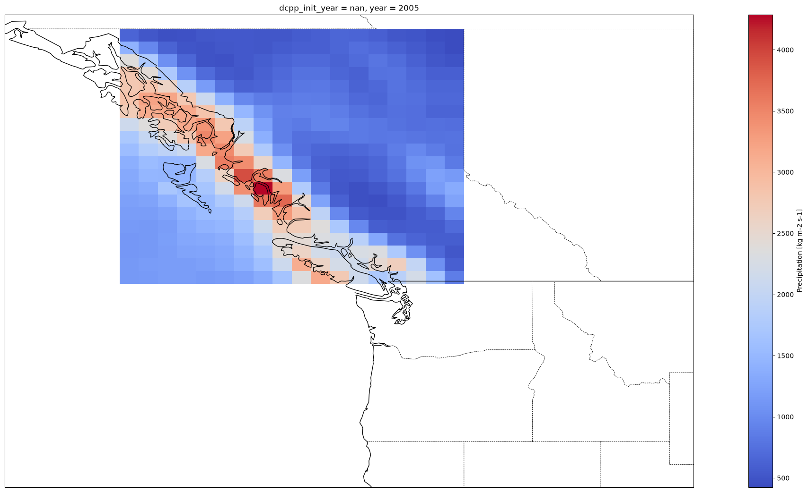
GISS#
Repeat the same steps as for CanESM and HadGEM
var_key = 'CMIP.NASA-GISS.GISS-E2-1-H.historical.Amon.gn'
filename = 'gis_bc_dset.nc'
full_path = out_folder / filename
write_file = False
if write_file:
gis_subset = col.search(table_id="Amon", variable_id = "pr", source_id = "GISS-E2-1-H", experiment_id = 'historical')
dset_dict = gis_subset.to_dataset_dict(zarr_kwargs={'consolidated':True})
gis_dset = dset_dict[var_key]
gis_bc_dset = gis_dset.sel(lon = slice(226.25, 238.75), lat = slice(48.835241, 59.99702), time = slice('1960', '2010'))
full_path = do_write(gis_bc_dset,filename,out_folder)
print(f"got here: giss, writing {full_path=}")
#
# read the netcdffile
#
gis_bc_dset = xr.open_dataset(full_path)
mean_precip_gis = gis_bc_dset.groupby('time.year').mean('time').mean(['lon', 'lat'])*86400*365
plt.figure()
mean_precip_gis.mean('member_id').pr.plot()
plt.title("Averaged Yearly precipitation for the GISS GCM")
plt.xlabel('Year')
plt.ylabel('Precipitation total (mm)')
Text(0, 0.5, 'Precipitation total (mm)')
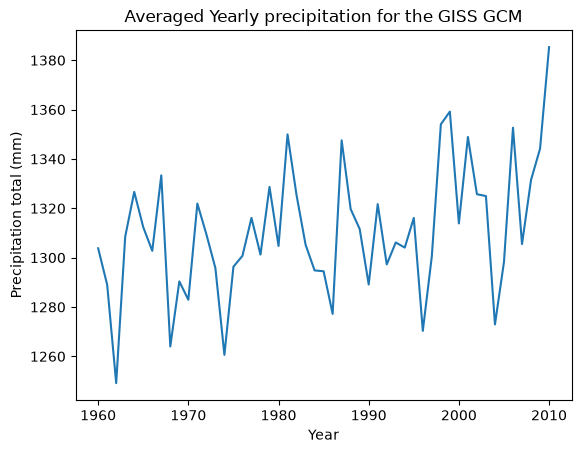
gis_std_precip = gis_bc_dset.groupby('time.year').mean('time').mean(['lon', 'lat'])*86400*365
gis_std_precip.std('member_id').pr.plot()
plt.title("Standard deviation of precipitation for the HadGEM members")
plt.xlabel('Year')
plt.ylabel('Precipitation total (mm)')
Text(0, 0.5, 'Precipitation total (mm)')
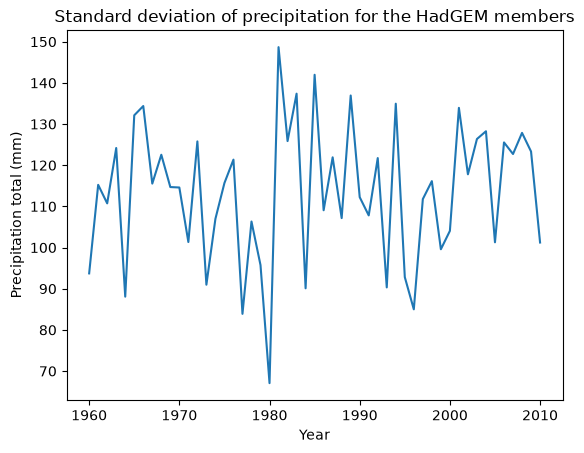
gis_hist_data = gis_bc_dset.groupby('time.year').mean('time').mean(['lon', 'lat'])*86400*365
gis_hist_data = gis_hist_data.sel(year=2010)
gis_hist_data.pr.plot.hist()
plt.title("2010 Precipitation Average distribution across the GISS members")
plt.xlabel('Precipitation total (mm)')
plt.ylabel('Number')
Text(0, 0.5, 'Number')
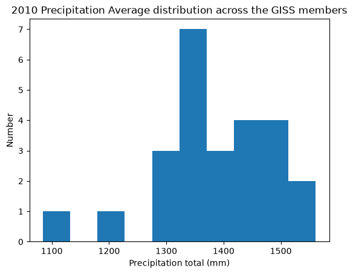
gis_data1990 = gis_bc_dset.sel(time='2010')
gis_precip_data1990 = gis_data1990.groupby('time.year').mean('time')*86400*365
gis_precip_data1990 = gis_precip_data1990.mean('member_id')
fig = plt.figure(1, figsize=[30,13])
ax = plt.subplot(1, 1, 1, projection=ccrs.PlateCarree())
ax.coastlines()
ax.add_feature(cartopy.feature.BORDERS, linestyle='-', alpha=1)
ax.set_extent([-140, -110, 40, 60])
resol = '50m'
provinc_bodr = cartopy.feature.NaturalEarthFeature(category='cultural',
name='admin_1_states_provinces_lines', scale=resol, facecolor='none', edgecolor='k')
ax.add_feature(provinc_bodr, linestyle='--', linewidth=0.6, edgecolor="k", zorder=10)
gis_precip_data1990.pr.plot(ax=ax,cmap='coolwarm')
<cartopy.mpl.geocollection.GeoQuadMesh at 0x33fb66fd0>
/Users/phil/repos/climlab_dirs/climate_students_eoas/.pixi/envs/default/lib/python3.14/site-packages/shapely/creation.py:746: RuntimeWarning: invalid value encountered in create_collection
return lib.create_collection(geometries, np.intc(typ), out=out, **kwargs)
/Users/phil/repos/climlab_dirs/climate_students_eoas/.pixi/envs/default/lib/python3.14/site-packages/shapely/creation.py:746: RuntimeWarning: invalid value encountered in create_collection
return lib.create_collection(geometries, np.intc(typ), out=out, **kwargs)
/Users/phil/repos/climlab_dirs/climate_students_eoas/.pixi/envs/default/lib/python3.14/site-packages/shapely/creation.py:746: RuntimeWarning: invalid value encountered in create_collection
return lib.create_collection(geometries, np.intc(typ), out=out, **kwargs)
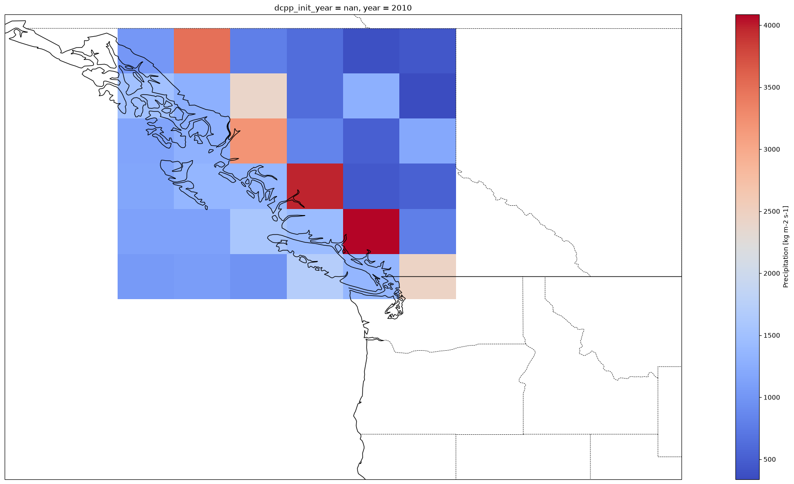
Creating plots with all 3 models#
time = mean_precip_gis.year
fig, axs = plt.subplots(1, 1, figsize=(30, 13))
axs.plot(time,mean_precip_gis.mean('member_id').pr)
axs.plot(time, mean_precip_had.mean('member_id').pr)
axs.plot(time, mean_precip.mean('member_id').pr)
[<matplotlib.lines.Line2D at 0x33fc9e7b0>]
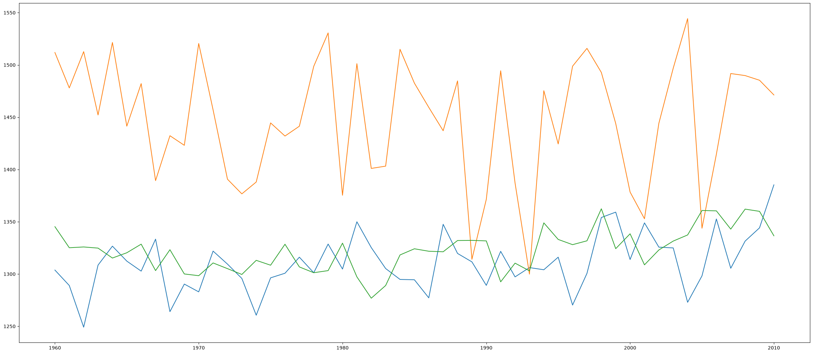
import skill_metrics as sm
import numpy as np
ref = mean_precip.mean('member_id').pr.to_numpy().flatten()
can = ref
had = mean_precip_had.mean('member_id').pr.to_numpy().flatten()
gis = mean_precip_gis.mean('member_id').pr.to_numpy().flatten()
data = {'ref': ref, 'can': can, 'had': had, 'gis':gis}
taylor_stats1 = sm.taylor_statistics(data['can'], data['ref'], 'data')
taylor_stats2 = sm.taylor_statistics(data['had'], data['ref'], 'data')
taylor_stats3 = sm.taylor_statistics(data['gis'], data['ref'], 'data')
sdev = np.array([taylor_stats1['sdev'][0], taylor_stats1['sdev'][1],
taylor_stats2['sdev'][1], taylor_stats3['sdev'][1]])
crmsd = np.array([taylor_stats1['crmsd'][0], taylor_stats1['crmsd'][1],
taylor_stats2['crmsd'][1], taylor_stats3['crmsd'][1]])
ccoef = np.array([taylor_stats1['ccoef'][0], taylor_stats1['ccoef'][1],
taylor_stats2['ccoef'][1], taylor_stats3['ccoef'][1]])
# Specify labels for points in a cell array (M1 for model prediction 1,
# etc.). Note that a label needs to be specified for the reference even
# though it is not used.
label = ['Non-Dimensional Observation', 'M1', 'M2', 'M3']
'''
Produce the Taylor diagram
Display the data points for correlations that vary from -1 to 1 (2
panels). Label the points and change the axis options for SDEV, CRMSD,
and CCOEF. Increase the upper limit for the SDEV axis and rotate the
CRMSD contour labels (counter-clockwise from x-axis). Exchange color and
line style choices for SDEV, CRMSD, and CCOEFF variables to show effect.
Increase the line width of all lines.
For an exhaustive list of options to customize your diagram,
please call the function at a Python command line:
>> taylor_diagram
'''
sm.taylor_diagram(sdev,crmsd,ccoef,
numberPanels = 2,
markerLabel = label, markerLabelColor = 'r',
tickRMS = range(0,90,10), tickRMSangle = 150.0,
colRMS = 'm', styleRMS = ':', widthRMS = 2.0,
titleRMS = 'off',
tickSTD = range(0, 80, 20), axismax = 60.0,
colSTD = 'b', styleSTD = '-.', widthSTD = 1.0,
colCOR = 'k', styleCOR = '--', widthCOR = 1.0)
---------------------------------------------------------------------------
ModuleNotFoundError Traceback (most recent call last)
Cell In[23], line 1
----> 1 import skill_metrics as sm
2 import numpy as np
3
4 ref = mean_precip.mean('member_id').pr.to_numpy().flatten()
ModuleNotFoundError: No module named 'skill_metrics'